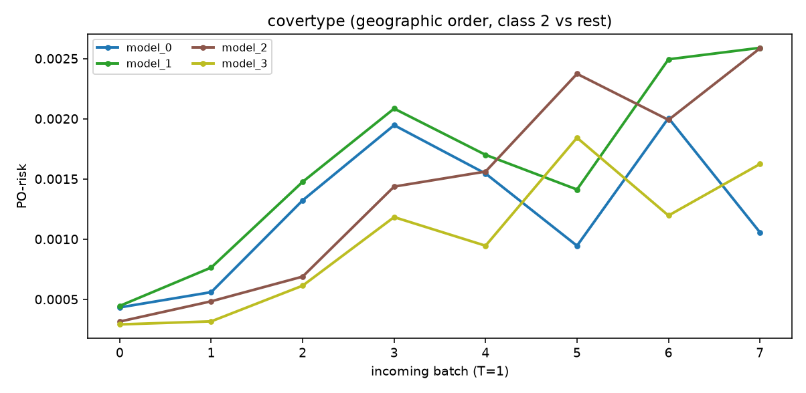
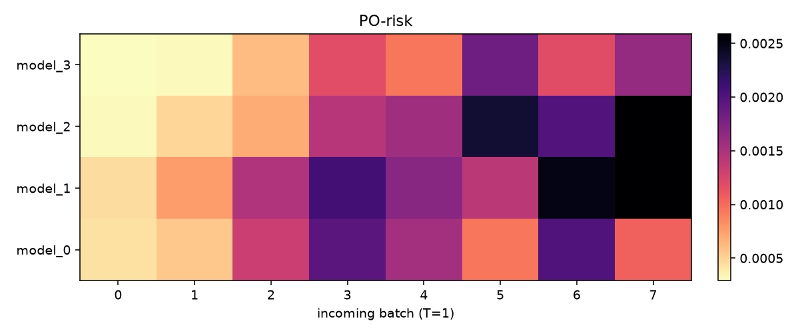
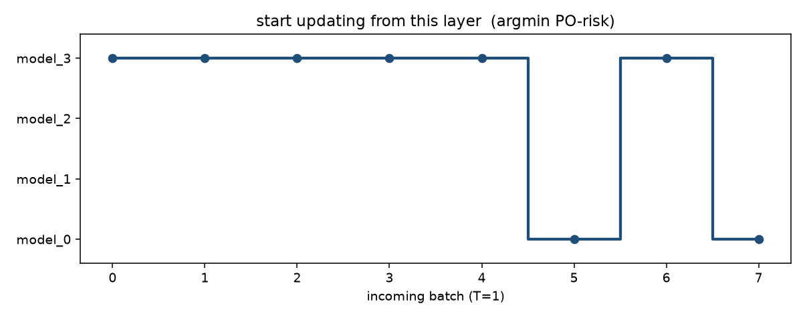

covertype (geographic order, class 2 vs rest). n_ref=10000, n_new=10000, hidden=[64, 32],
model_0…model_3. 新 batch 是 T=1。
看板直接读 PO-risk。i* = argmini PO-risk：从这一层开始 update。
n_new 不宜过小，否则要做 online-bootstrap，计算量太大。
从 model_3 开始 update（median i* = 3）



| model | PO-risk |
|---|---|
| model_0 | 0.001056 |
| model_1 | 0.002589 |
| model_2 | 0.002584 |
| model_3 ★ | 0.001623 |